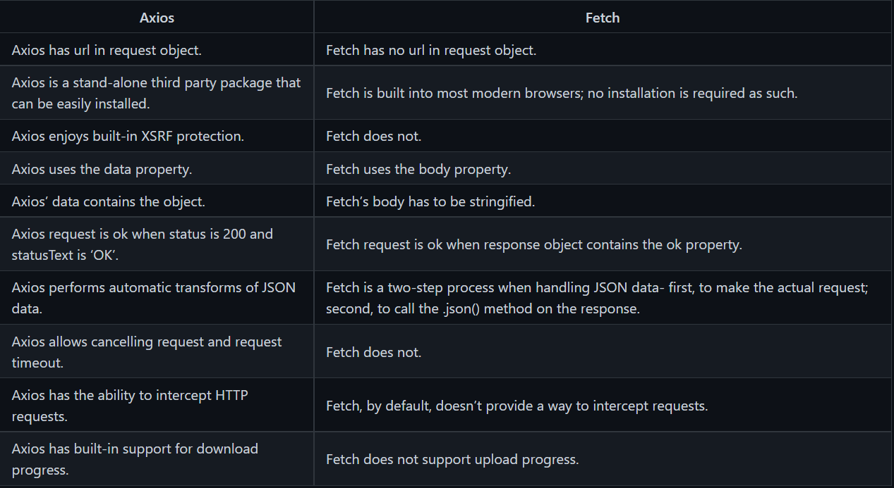

const getPostsData = () => {
axios
.get("https://jsonplaceholder.typicode.com/posts")
.then(data => console.log(data.data))
.catch(error => console.log(error));
};
getPostsData();
# Fetch: const getPostsData = () => {
fetch(‘https://jsonplaceholder.typicode.com/posts’)
.then(response => response.json())
.then(data => console.log(data))
.catch(error => console.log(error));
}
}
getPostsData();
Implementation
const Message = () => {
const [message, setMessage] = useState( '' );
return (
{message}
);
};
Q.3. What is useEffect Hook ?(Implementation) // 1. import useEffect
import { useEffect } from 'react';
function MyComponent() {
// 2. call it above the returned JSX
// 3. pass two arguments to it: a function and an array
useEffect(() => {}, []);
// return ...
}
EX--import { useEffect } from 'react';
function User({ name }) {
useEffect(() => {
document.title = name;
}, [name]);
return {name};
}
Q.4 What is UseReducer Hook ?(Implementation) import { useReducer } from 'react';
function MyComponent() {
const [state, dispatch] = useReducer(reducer, initialState);
const action = {
type: 'ActionType'
};
return (
);
}
Q.5 What is UseMemo Hook ?(Implementation) const memoizedResult = useMemo(compute, dependencies);Q.5 What is UseRef Hook ?(Implementation)
const Timer = () => {
const intervalRef = useRef();
useEffect(() => {
const id = setInterval(() => {
// ...
});
intervalRef.current = id;
return () => {
clearInterval(intervalRef.current);
};
});
// ...
}